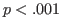

Next: 分散分析（対応なし×対応あり） Up: JASPについて Previous: 分散分析（対応なし）
アクティブ・ラーニングを取り入れた授業の開始後、40人の生徒の学習意欲を時間を追って測定したデータ（人工データ）を利用することにする https://okumurin.github.io/jasp/alrepeat.csv。
下の図は、このデータをJASPで開いたものである。
格納されている変数は以下の通り。
学習意欲得点を従属変数とし、測定時期（Time）を対応のある要因とした分散分析を実施してみよう。
[ANOVA] メニューから [Repeated Measures ANOVA] を選択する。
ここで、左のボックスから従属変数 Time0, Time1, Time2 を右側の [Repeated Measures Cells] に移動させるのであるが、デフォルトではここには [Level 1] と [Level 2] の2水準しか用意されていない。 この要因は3水準から成っているので、まずは一番上の [Repeated Measures Factors] の水準について、名称変更を兼ねて [Time0] から [Time2] までに変更しておく（Level 1 - Level 3 などラベルは任意で良い）。
その上で、Time0 から Time2 までを左のボックスから右のボックスに順に移動させる。 すると、以下のように分散分析表が表示される。 測定時期（Time）の主効果は上部の [Within Subjects Effects] に [RM Factor 1] という名称で格納されている。 検定結果は5%水準で有意となっている（ , ）。
ちなみに、分析メニューにおいてデフォルトの要因名 [RM Factor] を [Time] など任意の名称に変更しておけば、それ以降の分析結果に要因名として反映される。
引き続き、[Post Hoc Tests] を開いて多重比較を実施しておこう。 要因名が [RM Factor 1] と表示されているので、これを左から右のボックスに移動させる。 多重比較としては Holm の方法がデフォルトで採用されており、これにもとづく結果が表示される。
また、[Description Plots] を開き、[Horizontal Axis] に同様の要因を移動させると、時点ごとの学習意欲得点の平均がプロットされる。
なお、ここでの自由度の扱いは少々面倒である。 というのも、2群の平均の比較にはそれに関連するデータしか用いていないためである。 例えば、Time 0 と Time 1 の平均を比較する際には、この2水準のデータ（40名×2時点）のみが分析の対象となるということである。 しかも対応のあるデザインなので、差得点は40人分であり、自由度は ということになる。 従って、この場合は検定結果を , のように報告することになる。
Taichi Okumura